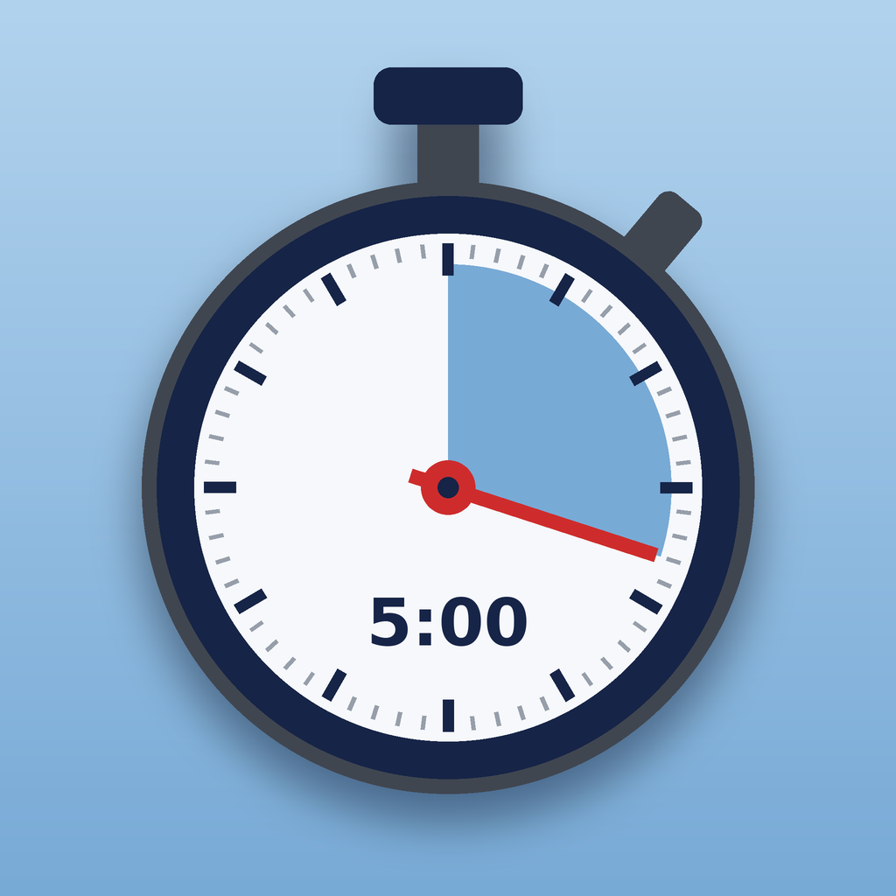

Indoor Softball Scorer
Score keeper and half-inning timer for indoor softball, on iPhone, iPad and Apple Watch.
Timed half innings
Big colour-coded countdown, haptic and sound alerts, and a flashing TIME when the half is over. You can still enter the last scores until the next half starts.Three-button scoring
Big +1, −1 and HR buttons, with Plus, Minus and Total tallies for each half.Clear results
Plus and minus tallies for each half, the score at the end of each inning, and the final result. Scores can go negative.Results you can send
Every game is saved as a spreadsheet file named with the date and teams. Email it to your league in one tap, or find it later in the Files app.On your wrist
A full Apple Watch app. Settings and finished games sync with your iPhone.Scoring
| Button | Points |
|---|---|
| +1 | +1 – each base, run or point won |
| −1 | −1 – each out or point lost |
| HR | Home run off the back wall: +5 (adjustable) |
Plus, Minus and Total tallies for the half are shown under the buttons. The defaults are 2 innings with 5-minute half innings, adjustable in 30-second steps; set HR to 4 for the outdoor variant. The highest total wins, so −5 beats −10, and a tied game stays tied.
Help & support
Starting a game: Game → New Game. Enter the team names and check the settings. Settings are remembered for future games until you change them.
During a half: tap Start clock, then tap +1, −1 or HR for each play. Use Undo if you make a mistake.
When time is up: enter any remaining scores, then tap “Start Bottom 1” (or the next half) on the clock to lock the half and start the next one. On the last half, tap End Game.
Results: when a game ends, tap Email results to send the scores, with the spreadsheet attached. You can set a default address under Settings → Results. Every game is also saved in Files → On My iPhone/iPad → Indoor Softball, and History lets you email it again or change the team names.
Apple Watch: swipe up and down between the clock, the +1 / −1 / HR page, the tallies and the controls. Watch games are Away v Home; add the team names afterwards in History on your iPhone. To keep the app on screen between plays, go to Settings → General → Return to Clock on the watch.
Questions, problems or ideas? Email support@nettek.uk.
Privacy
The app collects no data: no accounts, no ads, no analytics. Read the privacy policy.